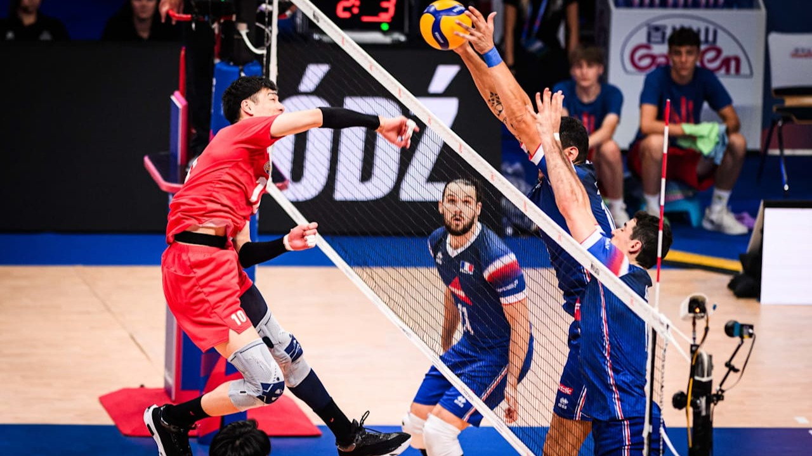

¿QUIÉNES SOMOS?
Somos un espacio dedicado a compartir la emoción de la Volleyball Nations League. Nuestra página reúne información, imágenes y videos relacionados con uno de los torneos más atractivos del voleibol internacional.
Somos un espacio dedicado a compartir la emoción de la Volleyball Nations League. Nuestra página reúne información, imágenes y videos relacionados con uno de los torneos más atractivos del voleibol internacional.

La Volleyball Nations League es una competición internacional que reúne a selecciones nacionales de voleibol. En cada encuentro, los equipos demuestran sus habilidades, preparación y capacidad para trabajar en conjunto.
El voleibol es un deporte que combina velocidad, estrategia y coordinación. Cada jugada requiere concentración y comunicación entre los integrantes del equipo para conseguir puntos y superar al rival.
En esta página queremos acercar a los aficionados a este deporte mediante publicaciones, fotografías y videos. Buscamos mostrar la emoción que se vive dentro de la cancha y el esfuerzo de los jugadores.
La pasión por el voleibol se refleja en cada partido, en cada bloqueo y en cada remate. Por eso, la VNL es una oportunidad para disfrutar del talento y la competencia internacional.
Compartir información y contenido sobre la VNL para que más personas conozcan y disfruten el voleibol.
Ser un espacio digital atractivo para los aficionados al voleibol y su competencia internacional.
Trabajo en equipo, respeto, esfuerzo, disciplina y pasión por el deporte.